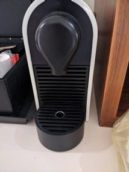
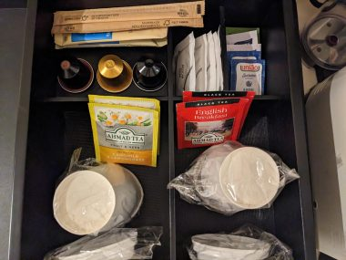
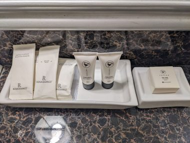

ブラジルのサンパウロ観光～治安の良いエリアで安全なおすすめホテル～
出発が遅れ、ブラジル、サンパウロの国際空港、グアルーリョス国際空港（GRU)に着いたのは１１時すぎだった。
カナダ、トロントからは直行便がでていて、夜に出発し、朝着く。寝ている間に着くので、機内泊でホテル代を節約できて現地滞在時間が長くなるというお得な便。
長蛇の列になるのではないかと心配していた入国審査は、秩序が保たれていて、さほど並ばずに受けられた。入国審査官は若い男性でアイドル並みの満面の笑みで、日本語で、いってらっしゃい、とあかるい声で見送ってくれた。
空港からはUBERを手配してホテルに向かう。平日午後１時。すぐに手配できて、渋滞にも巻き込まれず、１時間ほどでホテルに着いた。
泊まったホテルは、Renaissance Sao Paulo Hotel、 ルネッサンス サンパウロホテル。
市の中心であるパウリスタ通り（Ave.Paulista）からすぐ、治安の良い地域。
サンパウロは交通渋滞がひどく、たとえ短距離の移動といえども車だと時間がかかってしまい、時間を無駄に浪費してしまう。時間とタクシー代を考慮すると、多少ホテル代が高くても立地や治安面で相殺されるので中心部のホテルにした方がよい。
チェックインしたとき、ホテルの受付で治安についての説明をしてくれた。ここら辺は治安が良いエリアとはいえ、道で無防備にセルフィーはしないように注意された。携帯電話の窃盗は、対面より、バイクで行われるそう。道でセルフィーしているひとが恰好のターゲットになり、バイクに乗ったまま携帯をつかみ取られそのまま走り去る手口らしい。
サンパウロでは街歩きも楽しんだが、携帯は基本的にいつもしまっておいて、必要な時は車道から離れ、歩道の端まで移動して壁を背にし、周囲を伺いながら使った。
ホテルに着いたのはチェックインの時間よりだいぶ早かった。あいにく満室だったのでアーリーチェックインはできなかったが、プールやジムは使えってよいともことだったので、プールのロッカーで着替え、スーツケースを預かってもらえた（無料）。
プールは屋外プールで、水の温度はちょうどよく管理されていた。ジムは広くマシーン等の設備がかなり充実している。スパエリアも充実していて、サウナ、スチームサウナ、ジャグジーまであり、宿泊者は無料で使える。安全を考慮して暗くなってからは外出しないことにしていたので、夜はプールで泳いだりサウナに入ったりしてリラックスして過ごすことができた。
↓ネスプレッソマシーン。エスプレッソがおいしく飲めるコーヒーメーカー。

ネスプレッソマシーン用のコーヒーポッドとカモミールと紅茶のティーバッグ。コーヒーポッドは、近所のスーパーでたくさん売っているのでもっと飲みたければ簡単に手に入れることができる。

冷蔵庫あり。果物を買っていれておきたかったので、中はぎっしり飲み物が詰まっていたのをすべてだしてもらった。
バスタブとシャワーは別。バスタブは広く、バスバブルとバスソルトも用意されていて、お風呂にゆっくりとつかることができる。

シャンプー、
コンディショナー、
ボディークリーム
綿棒
爪やすり
化粧落としコットン
シャワーキャップ
別にお願いして、バスローブと髭剃り用の使い捨てシェーバーも追加で持ってきてもらえた。
最終日は空き室に余裕があったので３時のレイトチェックアウトにしてくれた。
mariott vonvoy のクレジットカードのポイントで5泊分のホテル代をまかなえた。宿泊費に対してポイント交換の換算率がお得で、設備や立地を考慮して総合的に判断するとコスパが良くここを選んで良かった。
オーストリアのウイーンでもルネッサンスホテルに泊まったけれど、あの時はタオル等の備品はすべてセルフサービスでそれはそれはコスパが悪いと感じたが、今回は正反対だった。
↓↓↓使ってます（アフェリエイト）↓↓↓
↓オンラインですべての手続が完了